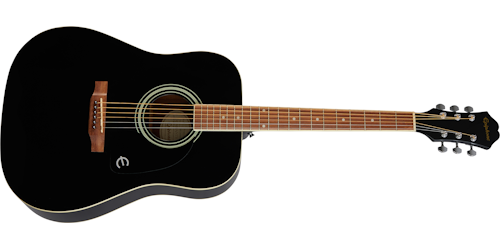

Playing Guitar

Playing games

Favorite superhero Spider Man

Cooking Food
Bio
I am from Tarlac City.
Achievements
Graduated from University of the Cordilleras
Finding a new home
Hobbies
Photography
Playing Mobile Games and some PC Games
Playing my Guitar
Cooking food